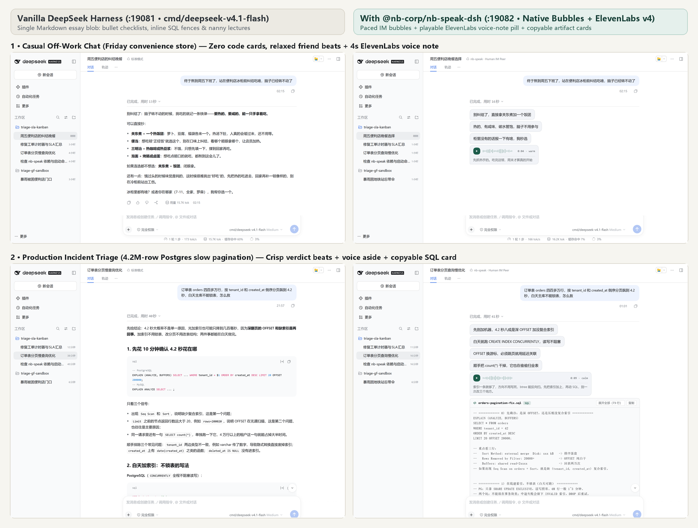

Zero send_message Collision
Registers send_bubble and send_artifact natively so DSH's send_message({ agent_id }) stays untouched for subagent delegation.
Mount send_bubble + send_artifact directly into DSH turnTail—squircle beats, 22-bar ElevenLabs eleven_v4 voice pills, and copyable cards.
npx --yes github:NB-Corp/nb-speak-dsh --apply --profile web
:19081 · assistant.content)
inline SQL + essay wall
@nb-corp/nb-speak-dsh (:19082 · turnTail)
exec.concludeTurn()
Persists ~/.dsh/plugins/nb-speak-dsh so npx cache cleanup never breaks DSH, and never touches .credentials.yaml.
Designed around Cordis host services, subagent tool boundaries, and WebUI turn reducers.
send_message CollisionRegisters send_bubble and send_artifact natively so DSH's send_message({ agent_id }) stays untouched for subagent delegation.
EMPTY_RESPONSE RetriesInvokes exec.concludeTurn() inside send_bubble—eliminating 5x empty-turn retry loops and duplicate Markdown tails.
turnTail SurfaceMounts outside collapsed step drawers while render() strips MP3 DataURIs—0 audio tokens enter LLM context.
Pick the exact layer for your harness, or combine all three.
Cordis tools + WebUI turnTail squircle bubbles, 22-bar voice pills, and copyable artifact cards.
npx --yes github:NB-Corp/nb-speak-dsh --apply
PROTOCOL SDK & SSE BRIDGE
Cross-framework send_message + send_artifact schemas, OpenAI/SSE proxy, and bubble_lint.
npx --yes github:NB-Corp/nb-speak serve
UNIVERSAL AGENT SKILL
Two-layer IM bubble physics & pluggable persona Skill for Codex, Claude Code, Kiki, and Cursor.
npx skills add NB-Corp/chat-human
